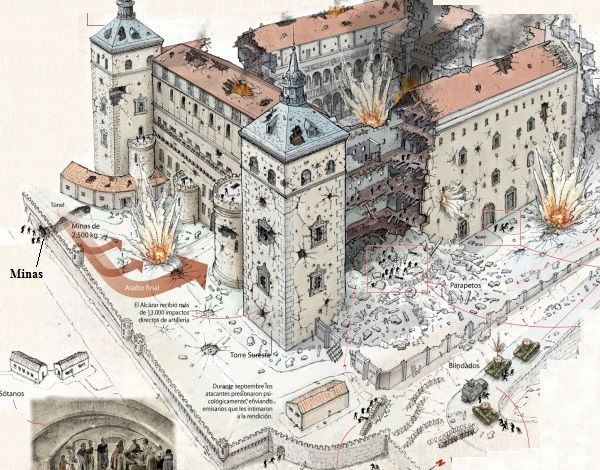
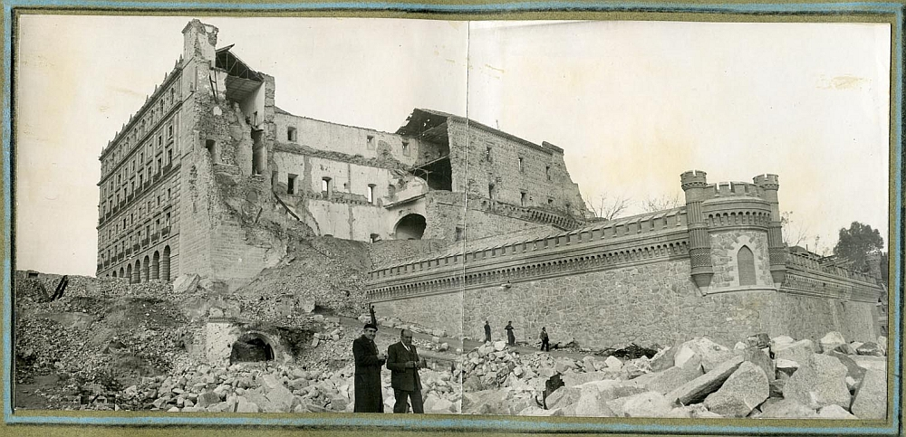
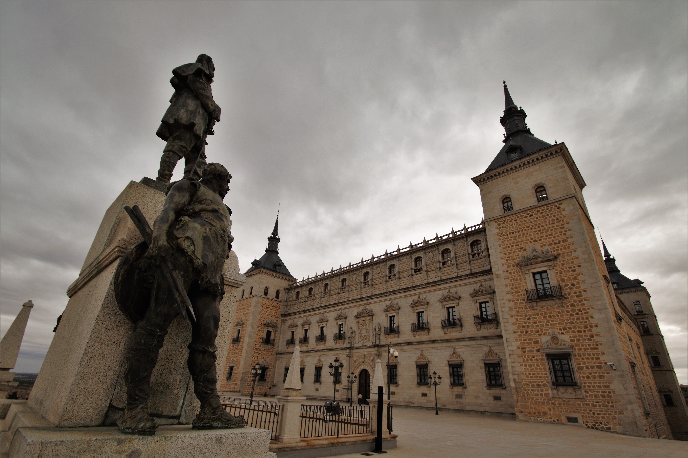

El Alcázar de Toledo nació como una fortificación estratégica en lo alto de la ciudad, con raíces que se remontan al siglo III con una estructura romana, pasando después a ser palacio visigodo y una importante alcazaba islámica tras la conquista del 711. Tras la reconquista de Toledo en 1085 por Alfonso VI, el edificio se transformó en residencia real y fue ampliado por monarcas como Alfonso X el Sabio. No obstante, su gran metamorfosis renacentista ocurrió en el siglo XVI, cuando el emperador Carlos V y su hijo Felipe II ordenaron su reconstrucción total bajo la dirección de arquitectos como Alonso de Covarrubias y Juan de Herrera, convirtiéndolo en un imponente palacio imperial que, sin embargo, perdió su papel de sede de la corte cuando Felipe II trasladó la capital a Madrid en 1561.



Tras siglos de declive en los que funcionó como cárcel y cuartel, el edificio cobró protagonismo histórico durante la Guerra Civil española en el verano de 1936, cuando resistió un feroz asedio de 70 días liderado por el coronel José Moscardó, quedando prácticamente en ruinas. Tras el conflicto, fue fielmente reconstruido respetando su traza renacentista original. En la actualidad, el Alcázar de Toledo alberga el valioso Museo del Ejército y la Biblioteca de Castilla-La Mancha, consolidándose como uno de los símbolos patrimoniales más representativos del país.